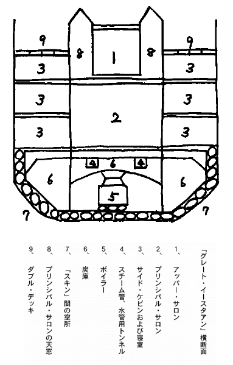

鉄で船を造ることは、技術的には、ヘンリー・コートが鉄板製造法を発明したことで（十八世紀末）可能になった。だがその後も長いあいだ、水に沈む代物で船が造れるもんかという意見が支配していた。いまだからこそ
「鉄造船のはなしは聞きたくもない、だいいち、自然に反している！」
といった。
八トンほどの河船で、船名をトライアルとつけられた最初の鉄造船（一七八七年）が英国でできてから、二番目の鉄造船ができるまでに二十年も間があった。ナポレオン戦争も済んで貿易と船舶業が恐しい繁栄時代にはいって、何よりも船材（英国産樫材）が暴騰した。利潤のためには鉄の意志をもつ船舶業者は本気で鉄造船の
自然に反するどころではなかった。鉄造船は同じ図体の木造船にくらべてかえって総重量は軽いことがわかった。
当時の技術をもってして鉄造船の場合船体および
鉄造船は同一トン数の木造船より四分の一だけ軽く済んだ、したがってそれだけ貨物積載量が
耐久力の上ではいうまでもないが、一八三四年に鉄造船ガリイ・オーエン号が処女航海で暴風を喰った。ほかの木造船は完全に難破したがこの船だけは無傷だった。
それでもまだ諸国
世界に君臨する大英国海軍ですら、鉄造戦艦をはじめて持ったのが一八六〇年である。
ところで木造船では三百フィートというのが構造上の極限だった。大西洋に就航した木造（汽）船では長さ二百八十二フィート三千トン（一八五〇年）というのが最大である。汽船帆船を問わず激化する競争は否応なしに大船を要求した。
テイラア号の難破に遅れることわずか四年、一八五八年に英国で起工した長さ六百八十フィート、幅八十二フィート、一万八千九百十四トンという巨大船「レヴィアザン」こそ、鉄造船にたいする半世紀にわたる頑強な
というのも――
船材としての木と鉄の競争は、帆船と汽船の闘争とはまた別のことがらであった。強いていえば帆船は鉄造船時代に入るとともに最後の発展段階に到達して、なお初期の発達段階にあった汽船にたいする競争力を一時増したのである。
それにたいする汽船の究極の勝利は、エンジンの発達によって購われた。単式低圧機関から複式高圧機関へ、
複式機関の発明からタービン機関船までの発展はわずか三十年で行われたが、汽船史上の最も興味のある時代はむしろ、フルトンのクレルモント号の進水（一八〇七年）から数えて六十年間にわたる単式機関船時代にある。あらゆる技術上の驚異的成果にもかかわらず、単式機関船時代には、経済的に、帆船にたいする勝利はついに不可能に終ったのである。
これは汽車のはなしだが、スティーヴンソンの最初の試験的な機関車がキリングウォース炭坑で一年間石炭を運搬したときの
陸のスチーム・ブラストに対応する海の技術的転回は同じく高圧蒸気と容積縮小を実現した複式エンジンの発明（一八五六年）で、石炭消費量はおよそ半減した。
それまでは――低圧単気筒の時代には――石炭消費量は一馬力一時間当り平均六ポンド。そこへもってきて後年のように石炭供給所が到るところにあったわけでないから、いよいよもって
まさか諸国逓信省が鉄造船を頑強に嫌ったからという理由だけでもあるまいが、五十年代までの汽船は、一方帆船がしきりに鉄造化されるにもかかわらず、木造だった。一八三三―一八五〇年の間に建造された大西洋ライナーのうちで鉄造汽船は一八四三年建造のグレート・ブリテン号くらいなものだ。貨物はいっさい算盤に合わぬから帆船に任され、帆船が技術上の最後の発展形態にまで完成されるための経済的根拠となった。相当に高価な旅客運賃だったが、それでも、それだけでは、なお当時の汽船の経済は不可能だった。政府の補助金が加わってはじめて算盤が合ったのである。政府の補助金は郵便物托送を名として客船会社に与えられた。
エンジンの技術的制約を究極の原因とするこうした経済的依存状態から、エンジンの改良なしに脱却するための方法はないか？ 実は問題は一八五一年に次のような形で提起されたのである――政府補助金なしに英濠間の汽船航路をいかにして実現せしむべきか？
この年濠洲のヴィクトリアで金鉱が発見された。もっぱら農業植民地としてのそれまでの濠洲の欧洲にたいする意義が一変した。定期的な連絡が要求された。海底電信はまだだった。金色の植民者団はそれで英濠間の最速汽船にたいする賞金を発表した。
そこでＥ・Ｓ・Ｎ――東方汽船会社というのが英国で設立されて、翌一八五二年に千三百五十トンの汽船を二隻つくって、賞金は見事貰ったが算盤が合わぬことになった。英国政府が郵便補助金をどうしてもくれない。
株主会議。補助金なしでいかにして経営すべきか？ 技師ブランネル氏の最も理論的なプランが株主たちになるべく解りやすい言葉で説明された。エンジンの改良はまだどこでも実現されていない。とすればエンジン以外での技術的改良によって、補助金がなくても
従来の汽船の少くとも五、六倍の大きさ――約二万トンの巨船を造って、相当馬力の――もちろん単式低圧――機関を装備すると、二、三千トン級の船に比して沢山の有利な条件がえられる。こんな巨大船はいったん動き出したらあとは楽に推進できる。したがって同一式の機関でも小汽船に比して速力にたいする石炭消費率は減少する。つぎに濠洲までの所要石炭をたっぷり積込むことができ、速力は約十五ノット出せる予定だが（この時までの汽船の最大速力は大西洋ライン「エシア」木造二千三百トンの十二ノット半）、何よりの強味は船体が巨きいため所要炭庫（および機関部）容積が比較的に最小で済むこと、したがって貨物および船客の収容力が比例的に激増することである。これらの点からして国庫補助金によらざる経営が充分可能になるばかりでなく、厳密な計算に基づいて、年四割の配当を予言することができるのである――。
株主会議は可決した。はじめふさわしくも「レヴィアザン」と呼ばれたこの巨大船は、まもなく「グレート・イースタアン」と改名されて一八五四年五月一日にロンドン・ミルオール造船所で起工、満三カ年と九カ月を費して、めでたく進水の運びがついた。
トン数一八、九一四（それまでの最大鉄造船は三、三〇〇トン）、排水トン数にして二七、〇〇〇トン、長さ六八〇フィート、幅八二・五フィート。一万トンの石炭と六千トンの貨物を積み、四千人の船客を収容し、軍隊なら一万人を輸送することができるはずである。

「グレート・イースタアン」横断面
たんに大きい、だからまた補助金なしで算盤がとれる、というだけでなく「グレート・イースタアン」は鉄造船技術史上の一つの画期的存在でもあった。なぜならこの船ではじめて理想的な「沈まない船」ができた――いわゆる「ダブル・スキン」がはじめて応用されたのである。
鉄の船は沈む――という臆断は、これで完全に否定されたわけだ。いな、およそ沈まぬ船というものが、木でなく鉄によって、はじめて実現されたのである。
一八五八年一月三十一日。このあらゆる意味で画期的な海の巨人が、近代資本主義の祝福を一身に集めて、進水式を挙げる日である。「グレート・イースタアン」は六八〇フィートの長大な船体をテームズ河に併行させていた。進水は横
ところが、いよいよ
水圧機を使ったり、散々手間と金を費したあげく、ようやく満潮時の河水に浮んだのは、それから三カ月のちだった。船は浮んだ。最後の予算外の大失費のため、今度は会社の方が沈没した。
進水した「グレート・イースタアン」は、その後さらに一年と四カ月ばかりは、艤装も施されず、有楽町の半出来の映画劇場みたいに、醜怪な姿を
だがその航路は、彼女本来の使命であった濠洲航路ではなく、太平洋航路だった。そもそも濠洲航路を補助金なしで稼ごうというのでできあがった巨大船である。その性能をもってこの長航路を独占し、往も復も満員満載――にちかい状態を予想して、そもそも算盤が弾かれていた。それも、さんらんたる金色の雲が濠洲を包んでおった六年前の算盤である。その黄金狂時代は、カリフォルニアでも、濠洲でもあまりに早くすぎ去ってしまった。
結局のところ濠洲黄金狂時代の申し子であった巨船「グレート・イースタアン」が、結局のところ大西洋を――他人の
そこには一八三七年以来の歴史をもつキュナード汽船が、ことに最近、多年の競争相手だった米国コリンス会社を完全にノックアウトした（一八五八年）ほどの実力――柄は小さいがサーヴィスは満点という娘盛りの一大船隊を
そこで当然、「グレート・イースタアン」にべらぼうな積載容力があればあるほどいよいよ算盤が合わなくなる、という悲劇が生じてきた。そもそもが客と貨物を満載せんことにはやってゆけないはずにできていたのだ。
そのうち、棄てる神あれば助ける神、という小市民的
じっさい、大西洋の一方から他方へ、およそ三千マイルにちかい長さの
「グレート・イースタアン」はいいみせしめとなった。彼女が進水してから三十年間というものは、その大きさの半分に達する船さえついに一
「グレート・イースタアン」から「カイゼル・ウィルヘルム二世」にいたる半世紀の間、技術上の進歩はどの方面で行われていたか？ 船体の構造についていえば、トン数の割合にいやに細長くなったことである。そのため速力が増し、同時に中央部船室の数が殖えるという一石二鳥の徳がある。むろんライナーの話で貨物船はべつだ。何よりの発達はいうまでもなくエンジンで、複式エンジンのことは前に書いたが（それとともに
汽船の
「グレート・イースタアン」は鉄造船の権威を確立したけれども汽船としては、換言すれば帆船にたいする新たなる世紀の挑戦者としては、失敗した。帆船はかえって自己を鉄造化することによって、なおしばらくのあいだ、汽船にたいする優越的地位を保つことができた。むろん旅客だけは汽船に譲らなければならなかった。が、年とともに激増してゆく貨物の運輸という部面では、鉄造帆船が商業上の優勝者として残った。全世界の帆船トン数は一八八〇年までは年とともに殖えていっている。
一八五〇年 〇、八三〇万トン（九一・九％）
一八六〇 一、一八四 （八九・一％）
一八七〇 一、四一一 （八四・二％）
一八八〇 一、四五四 （七二・九％）
一八六〇 一、一八四 （八九・一％）
一八七〇 一、四一一 （八四・二％）
一八八〇 一、四五四 （七二・九％）
一八九〇 一、二〇二 （五四・〇％）
実数の上でも減った。貨物が帆船から汽船に奪われてゆくのだ。貨物は何よりも資本家的商品である。何月何日にロンドンから、メルボルンから発送すれば、何月何日までにヨコハマへ、シスコへ着くという見とおしが何はおいても必要である。いかにも帆船の方が運賃は安いが、運賃をいっておれないもっと大きな利益が、運輸時日の帆は風まかせ。
一九〇〇 九九九万トン（三八・一％）
帆のない汽船トン数の方が、絶対的にも相対的にも殖えたのである。石炭を果実をはじめ、マトン、ラム、ビーフ、バター、ミルク、野菜、魚類等々の「
汽船はいまはあらゆる貨物を帆船から奪っていったばかりでなく、帆船時代には存在しなかった貨物を新たにつくり出しさえしたのだ。
ことのついでに日露戦争の年、一九〇五年をとってみよう。
一八八〇 一、四五四万トン（七二・九％）
一八九〇 一、二〇二 （五四・〇％）
一九〇〇 九九九 （三八・一％）
一九〇五 九五六 （三〇・九％）
これは世界中の商帆船トン数と、それの総商船トン数にたいする割合であった。したがってこの数字は、平均化されている。おのおのの国についてみれば、帆船の敗退はあるいはもっと早く、あるいはもっと遅れて、起っている。英本国では一八九〇年に帆船トン数の比率は三六・八％に減っており一九〇五年には一五・六％――この年の全世界の平均比率の約半分である。一八九〇 一、二〇二 （五四・〇％）
一九〇〇 九九九 （三八・一％）
一九〇五 九五六 （三〇・九％）
これにたいしてノールウェイでは、一九〇五年になっても五五％、ロシアでは同じく五三・六％――これらの国々は、やっと一八九〇年当時の世界的水準に、この点では、停滞していたということができる。
わが大日本帝国では――
一九〇五年の帆船トン数三三四、六八四トン、汽船トン数九三八、七八三トン。総商船トン数にたいする帆船トン数の比率は二六・三％。この年の各国平均比率三〇・九％よりいいばかりでなく、英国の一五・六、ドイツの二二・四には及ばないがフランスの四八・七、合衆国の三七％にくらべてずっといい。
もっと昔、明治二十三年、一八九〇年、世界全体としてはまだ帆船の方が多かった。英本国では帆船トン数の比率は三六・八％だった。ところが日本は、なんと、三三・八％。
けれども、同じ年、一国における汽船トン数の多さ、帆船トン数の少なさ――のトップを切っている国は、日本ではなくシナであって、
何の不思議もないはなしである。シナや日本のような東洋の君子国にとっては、汽船と同様に西洋型帆船もかつてはすべて「
そのかわり、いったん「西洋文明」をこの方面でも採用する段になると、鉄の船は浮ぶはずがあるまいの、なまものは汽船には積めまいの、といった苦労をはじめ、およそ「グレート・イースタアン」式の悲劇いっさい、味わう必要もなかったのである。
ペリーの「黒船」に上下顛倒して数年たたぬうちに、幕府だけでなく薩藩その他までが、自ら黒船の所有者となり、そのなかにはペリーの旗艦「サスクハナ」にひけをとらぬ、
だが、幕末の日本軍艦の大部分は半汽走船――補助汽走船だった。汽船と帆船の混血種であり、汽船と帆船の一世紀にわたる闘争の間からさまよい出た折衷派である。
どんな闘争でも、折衷派という奴をうみ出す。
最初の補助汽走船はアメリカの帆船業者がつくり出した。一八四五年に補助スクリューを装備された七百トンのクリッパー「マサチューセッツ」がそれで、一等船客三十五名を収容できる優美な船だった。これをもってアメリカの船舶業者は、一八三七年以来北大西洋の旅客をかっ
もっとも、生れたての汽船も、補助汽走船みたいなものだった。だが、その場合あくまで帆の方が補助機関であって、汽船が完成されるにつれて帆も帆柱もなくなってゆき、今日では、
いわゆる補助汽走船は、本来帆船であり、あくまで汽船に対抗するための、帆船の変形物にすぎない。だから汽船が発達して、補助の帆柱を単なる旗竿に使うようになっても、いわゆる補助汽船はけっして跡を断たなかった。失敗しても失敗してもあとからあとからできていった。没落する帆船業者の悲鳴的利害をその基礎にもっていたからであった。
一見補助汽走船はうまくいくように思える。風のあるかぎり帆を掲げて、一文も使わず時にいいかげんな汽船以上の速力もでる。天候一変すればエンジンをかけて稼ぐから、……だから折衷主義を「
だが、しょせんそれは不可能であった。天候一変の節、存分役に立つだけ強力なエンジンを装備すれば、エンジンやボイラーの容積は大きく要る。機関部員も一人二人では済まなくなる。結局エンジンが遊んでいる日も得にはならない。さりとて、得になる程度の小規模な馬力では、いざ荒天となって、何の役にもたたぬ。
この矛盾を解決してくれるものはないか？ 詩にみちた、かぐわしい、帆船時代をとり戻すために？ そして貧血した帆船業者を、昔の利潤にありつかせるために？
たまたま二十世紀の前夜にあたって、ディーゼル博士が内燃機関を発明した。エンジンも、燃料も、きわめてわずかな容積で済み、熟練した技師が一人か二人あれば沢山、さあ問題は解決した、というので、一九一〇年頃から、ディーゼル・エンジンを補助機関に備えつけた日和見帆船がワンサとできた。
だが、ディーゼルもまた従来発明されたすべての推進機関と同様に、結局は汽船をより「経済的」に武装した。二万トン以上のモーター・ライナーは今日ではけっして珍しくない。ディーゼルはあまりに経済的であった。――で、かりに一万トンの帆船がこの機関を有効な補助推進機関として
帆船そのものが、否定されたのである。
帆船輓歌は、ついに日和見主義の輓歌であった。